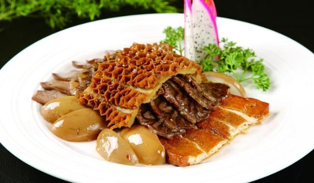
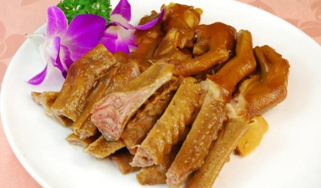
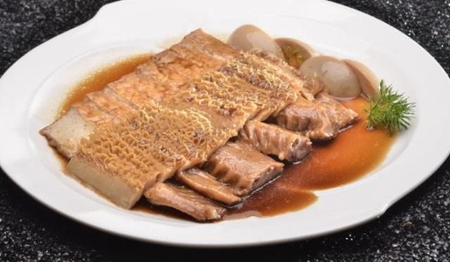
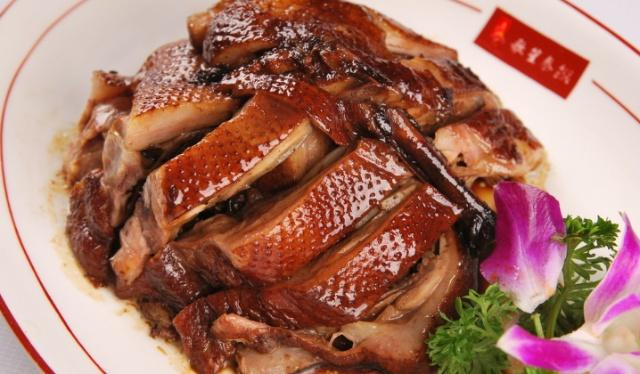

{{rows[0].name}}

“
{{rows[0].introduce}}
”
食材明细
主料
冬笋
200克
猪里脊肉
300克
水发木耳
60克
胡萝卜
60克
辅料
蒜
适量
剁辣椒
适量
鱼香
口味
炒
工艺
廿分钟
耗时
简单
难度
{{rows[0].name}}的做法步骤

1
{{rows[0].step1}}

2
{{rows[0].step2}}

3
{{rows[0].step3}}
4
{{rows[0].step4}}
5
{{rows[0].step5}}
小窍门
１、选择用里脊肉的原因是里脊肉比较辣。在切肉前可先放到冰箱冷冻一会，这样更容易切一些。
2、辣椒的量可根据自己的口味适当增加减少。
3、豆瓣酱有盐味。所以放盐一定要小心。